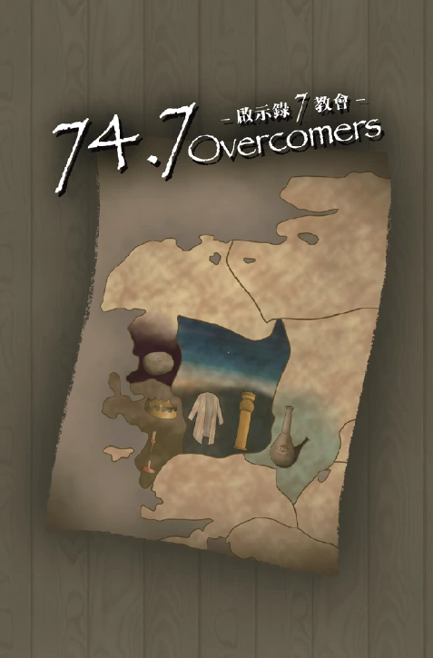

福音小說 > 74.7 Overcomers－啟示錄7教會

文本：岑明雲、劉景明、鄭伊珊
繪圖：王佳宣、孫祐予
遊戲設計：王示恩、岑明雲
企劃：林月娥
版權所屬: 飛躍青年傳愛中心
桌遊名稱： 74.7 Overcomers－啟示錄7教會
出版時間：2026北中門
故事文本
我─約翰就是你們的弟兄，和你們在耶穌的患難、國度、忍耐裡一同有分，為 神的道，並為給耶穌作的見證，曾在那名叫拔摩的海島上。當主日，我被聖靈感動，聽見在我後面有大聲音如吹號，說：你所看見的當寫在書上，達與以弗所、士每拿、別迦摩、推雅推喇、撒狄、非拉鐵非、老底嘉、那七個教會。
── 啟1:9~11